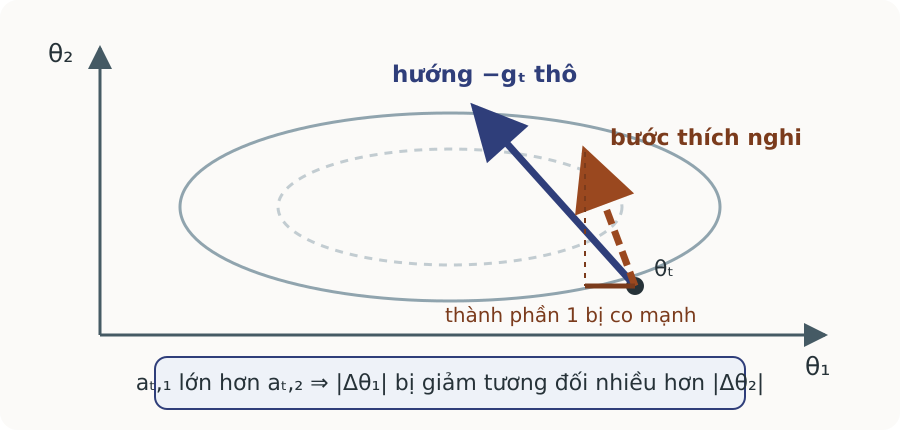
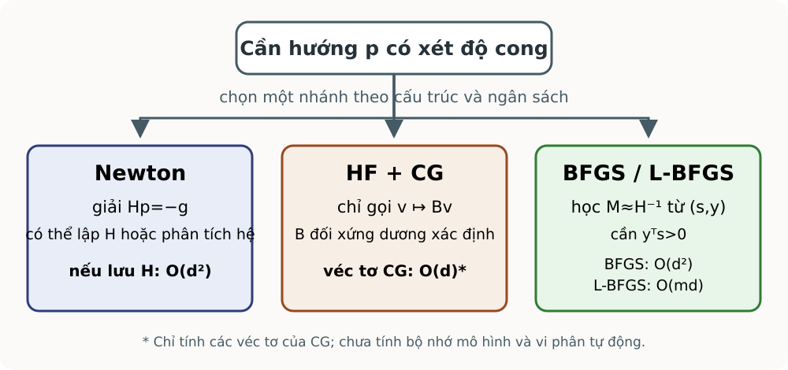
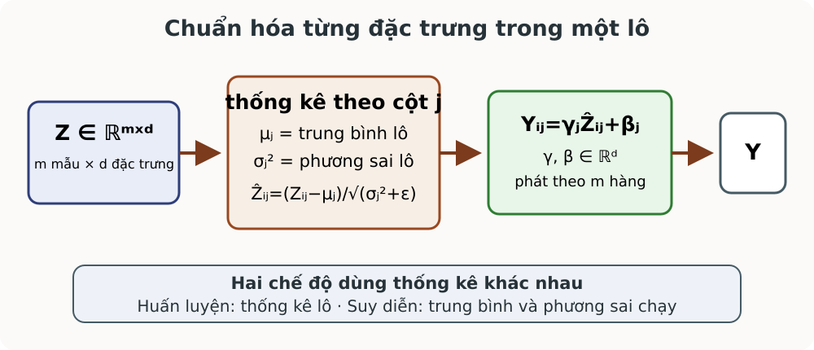

Một tốc độ học cho mọi tọa độ Tọa độ dốc Gradient lớn; bước chung dễ dao động.
Tọa độ thoải Gradient nhỏ; bước chung làm tiến chậm.
Nhu cầu: tốc độ học hiệu dụng riêng cho từng tọa độ.
Đây là xấp xỉ đường chéo, chưa mô hình hóa tương tác giữa tham số. Mạch bắt đầu từ nhu cầu thay vì tên thuật toán.
Nguồn: Goodfellow và cộng sự (2016), §8.5.
Trực quan co giãn theo lịch sử 
$$\Delta\theta_{t,j}\propto-\frac{g_{t,j}}{\sqrt{a_{t,j}}+\epsilon}$$
$a_{t,j}$ là thống kê lịch sử bình phương gradient ở tọa độ $j$. $a_{t,j}$ lớn: bước ngắn; nhỏ: bước tương đối dài. $\epsilon$ ổn định phép chia. Hình tự vẽ, không phải quỹ đạo thực nghiệm. $a_{t,j}$ là phần tử thứ $j$ của thống kê lịch sử $a_t$; ở các thuật toán sau, đó là tổng bình phương, trung bình mũ hoặc mômen bậc hai đã hiệu chỉnh.
Nguồn: Goodfellow và cộng sự (2016), §8.5; hình tự vẽ.
Trạng thái vòng đầu của ba bộ tối ưu $\theta_0=(0,0)$, $\eta=0{,}1$, $\epsilon=10^{-8}$; $g_1=(2,1)$, $g_2=(0,3)$.
Khởi tạo $r_0=v_0^{\mathrm{RMS}}=m_0^{\mathrm{Adam}}=v_0^{\mathrm{Adam}}=0$; $\rho=0{,}9$, $\beta_1=0{,}9$, $\beta_2=0{,}999$.
Tổng không quên $$r_1=(4,1)$$
Trung bình có quên $$v_1^{\mathrm{RMS}}=(0{,}4,0{,}1)$$
Hai mômen Adam $$m_1^{\mathrm{Adam}}=(0{,}2,0{,}1),\quad v_1^{\mathrm{Adam}}=(0{,}004,0{,}001)$$
AdaGrad nhớ toàn bộ; RMSProp quên dần; Adam nhớ hướng và thang.
Tất cả trạng thái được khởi tạo bằng véc-tơ $0$ có cùng kích thước với tham số. Từ $g_1\odot g_1=(4,1)$ suy ra trực tiếp $r_1$, $v_1^{\mathrm{RMS}}$, $m_1^{\mathrm{Adam}}$ và $v_1^{\mathrm{Adam}}$. Ký hiệu có chỉ số trên phân biệt hai biến thường cùng được viết là $v_t$: RMSProp dùng $\rho=0{,}9$, còn mômen bậc hai Adam dùng $\beta_2=0{,}999$. Đây là vết gradient cho sẵn, không phải gradient của một hàm cố định.
Nguồn: Ví dụ tự tạo, kiểm bằng thay số trực tiếp.
AdaGrad $$r_t=r_{t-1}+g_t\odot g_t,\qquad \theta_t=\theta_{t-1}-\eta\frac{g_t}{\sqrt{r_t}+\epsilon}.$$
Đầu vào $\theta_0$, $r_0=0$, $\eta$, $\epsilon$, gradient lô.
Đầu ra và dừng $\theta_t$; dừng theo ngân sách, gradient hoặc xác thực.
Tổng không quên quá khứ: tốc độ hiệu dụng chỉ giảm.
Chi phí bổ sung mỗi vòng là $O(d)$ thời gian và bộ nhớ. Tổng toàn lịch sử có thể làm bước quá nhỏ trong mạng sâu phi lồi.
Nguồn: Duchi, Hazan và Singer (2011); Goodfellow và cộng sự (2016), §8.5.1.
RMSProp $$v_t^{\mathrm{RMS}}=\rho v_{t-1}^{\mathrm{RMS}}+(1-\rho)g_t\odot g_t,$$
$$\theta_t=\theta_{t-1}-\eta\frac{g_t}{\sqrt{v_t^{\mathrm{RMS}}}+\epsilon},\qquad 0\le\rho<1.$$
Trung bình mũ quên lịch sử xa, nên thang bước thích nghi với vùng hiện tại.
Trạng thái $v_0^{\mathrm{RMS}}=0$, chi phí $O(d)$. RMSProp nguyên bản không hiệu chỉnh độ lệch khởi tạo bằng không, nên mômen có thể thấp ở đầu.
Nguồn: Hinton (2012); Goodfellow và cộng sự (2016), §8.5.2.
Adam và hiệu chỉnh độ lệch $$m_t^{\mathrm{Adam}}=\beta_1m_{t-1}^{\mathrm{Adam}}+(1-\beta_1)g_t,\quad v_t^{\mathrm{Adam}}=\beta_2v_{t-1}^{\mathrm{Adam}}+(1-\beta_2)(g_t\odot g_t)$$
$$\widehat m_t^{\mathrm{Adam}}=\frac{m_t^{\mathrm{Adam}}}{1-\beta_1^t},\quad \widehat v_t^{\mathrm{Adam}}=\frac{v_t^{\mathrm{Adam}}}{1-\beta_2^t},\quad \theta_t=\theta_{t-1}-\eta\frac{\widehat m_t^{\mathrm{Adam}}}{\sqrt{\widehat v_t^{\mathrm{Adam}}}+\epsilon}.$$
Checkpoint phải giữ $\theta_t,m_t^{\mathrm{Adam}},v_t^{\mathrm{Adam}}$ và chỉ số vòng $t$.
Với $m_0^{\mathrm{Adam}}=v_0^{\mathrm{Adam}}=0$, hai hệ số sửa lệch ở đầu quỹ đạo. Dưới mô hình mômen dừng $\mathbb E[g_t]=\mu$ và $\mathbb E[g_t\odot g_t]=\nu$, phép chia cho $1-\beta_1^t$, $1-\beta_2^t$ khôi phục đúng kỳ vọng; đây không phải phát biểu vô điều kiện cho mọi chuỗi gradient. Tích $g_t\odot g_t$, căn và chia đều theo phần tử; chi phí và bộ nhớ đều $O(d)$.
Nguồn: Kingma và Ba (2015), “Adam: A Method for Stochastic Optimization”.
Quy trình triển khai và lựa chọn Lấy lô và tính $g_t$. Cập nhật trạng thái trước tham số. Co giãn theo phần tử; kiểm tra số hữu hạn. Đánh giá dừng bằng xác thực hoặc gradient đầy đủ. Tín hiệu Thử đầu tiên Giới hạn gradient thưa AdaGrad bước tắt sớm thống kê gradient không dừng RMSProp nhạy $\rho,\eta$ cần mômen và co giãn Adam không luôn tốt nhất
Checkpoint phải giữ cả tham số lẫn trạng thái. Không dùng thống kê gradient lô nhiễu làm tiêu chuẩn dừng duy nhất. Không có bộ tối ưu tốt nhất phổ quát; lựa chọn phải gắn với tín hiệu và phép đánh giá.
Nguồn: Goodfellow và cộng sự (2016), §8.5.4.
Vòng hai và so sánh bộ nhớ Câu hỏi: từ bốn trạng thái và các siêu tham số trong ví dụ vòng đầu, tính trạng thái vòng hai, $\theta_2$ và giải thích khác biệt.
Quy tắc Trạng thái sau vòng 2 $\theta_2$ So sánh AdaGrad $r_2=(4,10)$ $\approx(-0{,}1000,-0{,}1949)$ nhớ toàn bộ RMSProp $v_2^{\mathrm{RMS}}=(0{,}36,0{,}99)$ $\approx(-0{,}3162,-0{,}6177)$ quên dần Adam $\widehat m_2^{\mathrm{Adam}}\approx(0{,}9474,2{,}0526)$ $\approx(-0{,}1670,-0{,}1918)$ hướng và thang
Ba quỹ đạo khác nhau dù dùng cùng $g_1,g_2$.
AdaGrad có $\theta_1\approx(-0{,}1,-0{,}1)$. RMSProp dùng $\rho=0{,}9$ và có $\theta_1\approx(-0{,}3162,-0{,}3162)$. Adam dùng $\beta_1=0{,}9$, $\beta_2=0{,}999$, có $m_2^{\mathrm{Adam}}=(0{,}18,0{,}39)$, $v_2^{\mathrm{Adam}}=(0{,}003996,0{,}009999)$; vì $1-\beta_2^2=0{,}001999$, tọa độ hai của $\widehat v_2^{\mathrm{Adam}}$ xấp xỉ $5{,}0020$. Điểm so sánh cần nói được: AdaGrad chỉ làm mẫu số tăng; RMSProp cho lịch sử xa giảm trọng số; Adam dùng cả mômen bậc nhất lẫn thang bậc hai đã hiệu chỉnh lệch.
Nguồn: Bài tập tự tạo; phép tính kiểm trực tiếp từ công thức.
Gradient chưa mô tả độ cong 
Đường chéo chỉ đổi thang. Hessian mô tả tương tác chéo. Cần chọn lượng độ cong phù hợp ngân sách. Kết quả A08 cho thấy ba bộ tối ưu đường chéo đã tạo ba quỹ đạo khác nhau nhưng vẫn không mô hình hóa tương tác chéo. Hình tự vẽ là bản đồ lựa chọn: Newton giải hệ; HF–CG dùng tích ma trận–véc-tơ; BFGS học nghịch đảo gần đúng.
Nguồn: Goodfellow và cộng sự (2016), §8.6; hình tự vẽ.
Mô hình bậc hai cục bộ Với $F:\mathbb R^d\to\mathbb R$ hai lần khả vi:
$$q_t(p)=F(\theta_t)+g_t^Tp+\frac12p^TH_tp.$$
$H_t\succ0$ $H_tp=-g_t$ cho cực tiểu duy nhất.
$H_t$ bất định Bước Newton có thể không giảm.
$g_t=\nabla F(\theta_t)$ và $H_t=\nabla^2F(\theta_t)$. Không cần tính nghịch đảo; chỉ cần giải hệ.
Nguồn: Nocedal và Wright (2006), §3.3; Goodfellow và cộng sự (2016), §8.6.1.
Newton có giảm chấn Xét $g=(1,2)$, $H=\operatorname{diag}(-1,4)$.
Không giảm chấn $p=(1,-0{,}5)$, $g^Tp=0$.
$\lambda=2$ $B=H+2I=\operatorname{diag}(1,6)$.
$p=(-1,-1/3)$, $g^Tp=-5/3<0$.
Khi $\lambda$ lớn, $p\approx-g/\lambda$: bước thu nhỏ và gần hướng gradient âm.
Hessian khả nghịch chưa đủ để bước Newton là hướng giảm. $g^Tp<0$ xác nhận hướng giảm khi $g\ne0$. Vì $(H+\lambda I)^{-1}\approx \lambda^{-1}I$ khi giảm chấn lớn, $p=-(H+\lambda I)^{-1}g\approx-g/\lambda$.
Nguồn: Ví dụ tự tạo; Goodfellow và cộng sự (2016), phương trình 8.28.
Newton trong mạng sâu Đầu vào: $\theta_0$, quy tắc $\lambda_t$, dung sai $\tau$.Tính $g_t$ và $B_t=H_t+\lambda_tI$. Chọn hoặc tăng $\lambda_t$ để $B_t\succ0$; nếu chưa chứng minh được, giải thử rồi kiểm $g_t^Tp_t<0$. Giải $B_tp_t=-g_t$, tìm kiếm đường cho $\alpha_t$, rồi cập nhật. Dừng: $\|g_t\|\le\tau$, bước nhỏ hoặc hết ngân sách.Hessian đặc: $O(d^2)$ bộ nhớ; giải đặc tới $O(d^3)$ thời gian.
Không tạo nghịch đảo tường minh. Tính dương xác định bảo đảm hệ có nghiệm duy nhất và $g_t^Tp_t=-p_t^TB_tp_t<0$ với $p_t\ne0$. Nếu chỉ kiểm hướng giảm thì vẫn cần tìm kiếm đường trước khi chấp nhận bước.
Nguồn: Goodfellow và cộng sự (2016), §8.6.1; Nocedal và Wright (2006).
CG trong Hessian-free Giải $B_tp=-g_t$ với $G_t$ là xấp xỉ độ cong bán xác định dương, chẳng hạn Gauss–Newton:
$$B_t=G_t+\lambda_tI,\quad G_t\succeq0,\quad \lambda_t>0.$$
Suy ra $B_t\succ0$: gradient liên hợp (CG) có giả thiết hợp lệ.
p = 0; r = -g_t; d = r
lặp đến khi ||r|| ≤ τ hoặc đủ K bước:
α = (rᵀr)/(dᵀB_t d)
p = p + αd
r_mới = r - αB_t d
β = (r_mớiᵀr_mới)/(rᵀr)
d = r_mới + βd; r = r_mớiHessian-free (HF) không hình thành Hessian; nó dùng tích $B_tv$, thường qua vi phân tự động. Mỗi vòng CG bị chi phối bởi một tích ma trận–véc-tơ và dùng $O(d)$ bộ nhớ.
Nguồn: Martens (2010), §§3–4; Nocedal và Wright (2006), Chương 5.
Hai vòng gradient liên hợp $B_t:=H=\begin{pmatrix}4&1\\1&2\end{pmatrix}\succ0$, $g_t=(-1,0)^T$, $b:=-g_t=(1,0)^T$, $p_0=0$.
$d_0=(1,0)^T$; sau vòng đầu, $d_1=(1/16,-1/4)^T$.
Vòng $\alpha_k$ $p_{k+1}$ $r_{k+1}$ $k=0$ $1/4$ $(1/4,0)^T$ $(0,-1/4)^T$ $k=1$ $4/7$ $(2/7,-1/7)^T$ $(0,0)^T$
Sau hai vòng, $Hp_2=b$ đúng; trong số học chính xác, CG giải hệ SPD cấp hai sau nhiều nhất hai vòng.
Ở đây $g_t=(-1,0)^T$, $r_0=d_0=(1,0)^T$. Sau vòng đầu, $\beta_0=1/16$ và $d_1=(1/16,-1/4)^T$. Khi HF dừng CG sớm, nghiệm chỉ gần đúng; hướng cắt ngắn có thể chưa đạt độ giảm dự báo, nên vòng ngoài phải kiểm tỷ số giảm hoặc tìm kiếm đường và điều chỉnh giảm chấn.
Nguồn: Ví dụ tự tạo theo thuật toán CG trong Nocedal và Wright (2006), Chương 5.
BFGS và L-BFGS $s_t=\theta_{t+1}-\theta_t$, $y_t=g_{t+1}-g_t$, $\rho_t=(y_t^Ts_t)^{-1}$.
$$M_{t+1}=(I-\rho_ts_ty_t^T)M_t(I-\rho_ty_ts_t^T)+\rho_ts_ts_t^T.$$
L-BFGS Giữ $m$ cặp $(s_i,y_i)$: $O(md)$.
Cần $y_t^Ts_t>0$; gradient lô nhiễu làm cặp cong kém tin cậy.
Nếu $M_t\succ0$ và $y_t^Ts_t>0$ thì cập nhật giữ tính dương xác định. Ký hiệu $\rho_t=(y_t^Ts_t)^{-1}$ ở đây thuộc BFGS, khác hệ số quên $\rho$ của RMSProp. L-BFGS dùng hai vòng lặp để áp dụng nghịch đảo gần đúng mà không lưu ma trận; thường cần gradient gần xác định và tìm kiếm đường đáng tin.
Nguồn: Nocedal và Wright (2006), §§6.1, 7.2; Goodfellow và cộng sự (2016), §8.6.3.
Kiểm số một cập nhật BFGS $s=(1,0)^T$, $y=(2,1)^T$, $M_0=I$ nên $y^Ts=2>0$.
$$M_1=\begin{pmatrix}0{,}75&-0{,}5\\-0{,}5&1\end{pmatrix}.$$
Hướng $p=-M_1g=(0{,}25,-1{,}5)^T$.
$g^Tp=-2{,}75<0$: hướng BFGS là hướng giảm.
Ở đây $\rho=1/2$. Có thể kiểm $M_1$ đối xứng và các định thức con đầu là $0{,}75$ và $0{,}5$, nên $M_1\succ0$. Kết quả số hiện thực hóa điều kiện độ cong thay vì chỉ nhắc công thức.
Nguồn: Ví dụ tự tạo theo công thức BFGS trong Nocedal và Wright (2006), §6.1.
Bài tập chọn công cụ độ cong Câu hỏi: chọn công cụ đầu tiên và điều kiện phải kiểm.
Tình huống Lựa chọn Điều kiện $d=80$, Hessian SPD Newton giải hệ ổn định $d=10^7$, có $v\mapsto Gv$ HF–CG $G\succeq0$, giảm chấn, phần dư gradient gần xác định L-BFGS $y^Ts>0$
Lựa chọn cần cấu trúc toán tử, mức nhiễu, bộ nhớ và khả năng tìm kiếm đường. Kết hợp phép tính CG, phép kiểm BFGS và quyết định ở đây để đánh giá đầy đủ khả năng vận dụng.
Nguồn: Bài tập tự tạo theo Martens (2010) và Nocedal–Wright (2006).
Ổn định bài toán thay vì chỉ đổi bước Biểu diễn Chuẩn hóa kích hoạt.
Khối biến Tối ưu lần lượt.
Ba chiến lược tác động lên ba đối tượng khác nhau.
Đây là ba chiến lược đầu của LLO16: đổi tham số hóa, phân rã biến hoặc xử lý đầu ra quỹ đạo.
Nguồn: Goodfellow và cộng sự (2016), §§8.7.1–8.7.3.
Chuẩn hóa theo lô 
$H\in\mathbb R^{m\times d}$ gồm $m$ mẫu trong lô và $d$ đặc trưng:
$$\mu_j=\frac1m\sum_iH_{ij},\qquad j=1,\ldots,d.$$
$$\sigma_j^2=\frac1m\sum_i(H_{ij}-\mu_j)^2.$$
$$\widehat H_{ij}=\frac{H_{ij}-\mu_j}{\sqrt{\sigma_j^2+\epsilon}}.$$
$$Y_{ij}=\gamma_j\widehat H_{ij}+\beta_j.$$
Chuẩn hóa theo lô (batch normalization, BN) là tái tham số hóa; $H$ ở đây là ma trận kích hoạt, không phải Hessian $H_t$ của phần B. $\beta_j$ là dịch chuyển BN, khác các hệ số $\beta_1,\beta_2$ của Adam và $\beta_k$ trong CG. Gradient truyền qua thống kê lô; suy diễn dùng trung bình/phương sai chạy.
Nguồn: Ioffe và Szegedy (2015); Goodfellow và cộng sự (2016), §8.7.1; hình tự vẽ.
Ví dụ chuẩn hóa một đặc trưng $h=(1,3)^T$, $\epsilon=0{,}01$, $\gamma=2$, $\beta=0{,}5$.
$\mu=2$
→
$\sigma^2=1$
→
$\widehat h\approx(-0{,}995,0{,}995)^T$
→
$y\approx(-1{,}490,2{,}490)^T$
Giới hạn lý tưởng $\epsilon\to0^+$ cho $\widehat h\to(-1,1)^T$ và $y\to(-1{,}5,2{,}5)^T$.
Vì $\sqrt{1+0{,}01}\approx1{,}005$, hai giá trị chuẩn hóa xấp xỉ $\pm0{,}995$ và phương sai sau chuẩn hóa là $1/(1+0{,}01)\approx0{,}9901$. Không đặt $\epsilon=0$ trong thuật toán; kết quả $(-1,1)^T$ chỉ là giới hạn lý tưởng. Khi suy diễn, dùng thống kê chạy tích lũy lúc huấn luyện thay cho thống kê của một mẫu.
Nguồn: Ví dụ tự tạo theo Ioffe và Szegedy (2015).
Hạ tọa độ và hạ theo khối Đầu vào: $x^{(0)}\in\mathbb R^d$, phân hoạch khối, dung sai.Chọn khối $S_t$ theo quy tắc hợp lệ. Giảm $F$ theo $x_{S_t}$, giữ khối khác cố định. Dừng: điều kiện tối ưu theo khối hoặc hết ngân sách.Hữu ích khi bài toán con tách hoặc rẻ; chậm khi biến ghép mạnh.
Hạ tọa độ không mặc nhiên hội tụ cực tiểu toàn cục trong phi lồi. Nếu gradient theo khối $S$ là $L_S$-Lipschitz, bước $-\nabla_SF/L_S$ cho một cận giảm theo bổ đề hạ trơn; đây là điều kiện định lượng phía sau quy tắc “giảm theo khối”. Chi phí phụ thuộc cách giải từng bài toán con.
Nguồn: Goodfellow và cộng sự (2016), §8.7.2.
Ví dụ hạ tọa độ chậm $$F(x_1,x_2)=(x_1-x_2)^2+\alpha(x_1^2+x_2^2),\quad \alpha>0.$$
$$x_1^{k+1}=\frac{x_2^k}{1+\alpha},\qquad x_2^{k+1}=\frac{x_1^{k+1}}{1+\alpha}=\frac{x_2^k}{(1+\alpha)^2}.$$
Với $\alpha=0{,}01$: một cập nhật vô hướng có hệ số $0{,}9901$; một chu kỳ hai tọa độ co $x_2$ theo hệ số $0{,}9803$.
Một cập nhật là tối ưu đúng một tọa độ khi giữ tọa độ kia cố định. Một chu kỳ gồm cập nhật $x_1$ rồi $x_2$; do đó không được gọi hệ số $0{,}9901$ là mức co của cả chu kỳ. Nghiệm toàn cục là $(0,0)$; ghép mạnh vẫn làm hội tụ tuyến tính chậm.
Nguồn: Goodfellow và cộng sự (2016), ví dụ §8.7.2; hệ số được tính trực tiếp.
Lấy trung bình Polyak Định nghĩa $$\widehat\theta_t=\frac1t\sum_{i=1}^t\theta_i.$$
Bộ tối ưu vẫn tạo $\theta_t$.
Ví dụ tính được $\theta_1=(1,-1)$, $\theta_2=(-1,1)$, $\theta_3=(1,-1)$, $\theta_4=(-1,1)$.
$$\widehat\theta_4=(0,0).$$
Trung bình làm giảm dao động đối xứng; nó không sửa quy tắc cập nhật gốc.
Cộng bốn véc-tơ được $(0,0)$ rồi chia cho $4$. Khi $F$ lồi, Jensen cho $F(\widehat\theta_t)\le t^{-1}\sum_{i=1}^tF(\theta_i)$; ví dụ mạng sâu phi lồi không được hưởng bảo đảm này. Trong mạng sâu thường chỉ lấy trung bình sau giai đoạn quá độ hoặc dùng một cửa sổ muộn để tránh trộn các miền xa nhau.
Nguồn: Polyak và Juditsky (1992); Goodfellow và cộng sự (2016), §8.7.3; ví dụ tự tạo.
Khung chọn chiến lược cục bộ Câu hỏi: hoàn thành mỗi hàng theo khung tín hiệu → can thiệp → phép đo và giới hạn.
Tín hiệu Can thiệp Phép đo / giới hạn Thống kê kích hoạt đổi mạnh giữa các lô BN: đổi tham số hóa so sánh thống kê chạy; lô nhỏ gây nhiễu Hai khối; bài toán con lồi và rẻ hạ theo khối: đổi khối cập nhật giảm mất mát mỗi chu kỳ; ghép mạnh làm chậm Quỹ đạo sau quá độ dao động cùng miền Polyak: đổi đầu ra quỹ đạo mất mát xác thực; trộn miền xa có thể kém
Chấm ba minh chứng độc lập. Mỗi câu trả lời phải xác định đúng đối tượng bị can thiệp, phép đo dùng để đánh giá và một giới hạn. Bảng này đồng thời phân biệt ba loại biến đổi.
Nguồn: Bài tập tự tạo theo Goodfellow và cộng sự (2016), §§8.7.1–8.7.3.